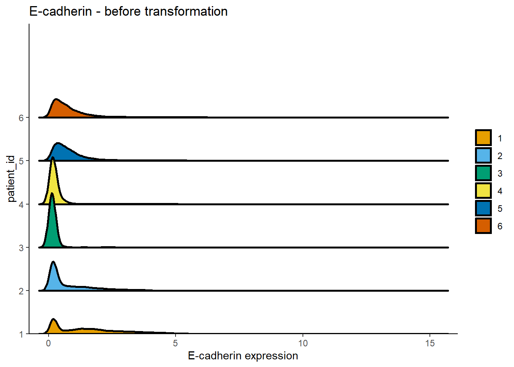
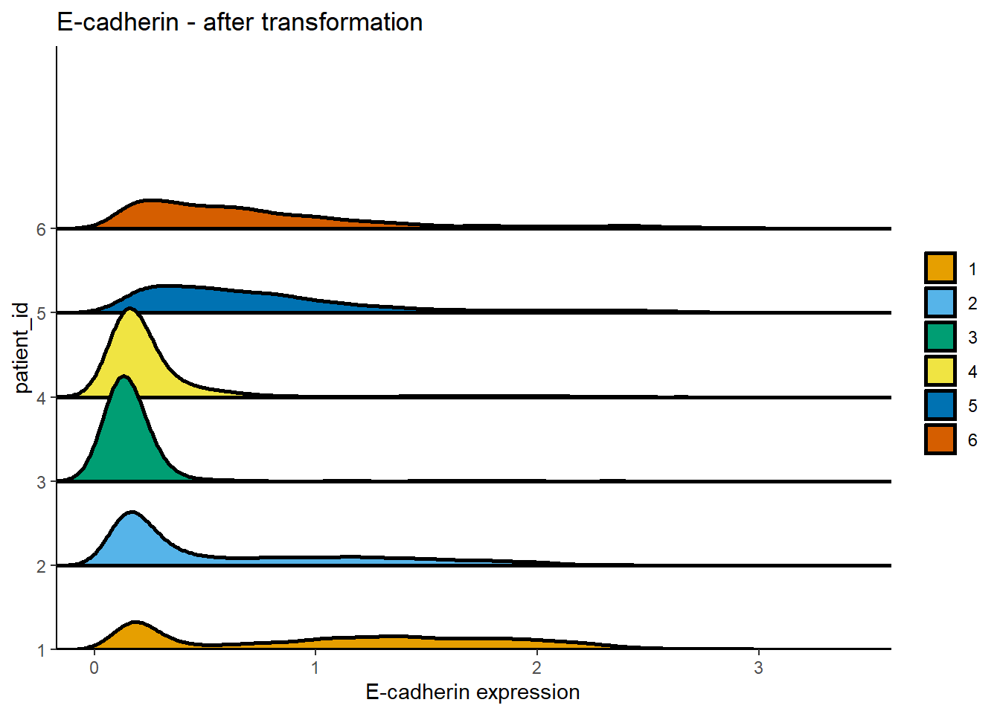

Last updated: 2022-08-30
Checks: 6 1
Knit directory: 220707_workflowr/
This reproducible R Markdown analysis was created with workflowr (version 1.7.0). The Checks tab describes the reproducibility checks that were applied when the results were created. The Past versions tab lists the development history.
Great! Since the R Markdown file has been committed to the Git repository, you know the exact version of the code that produced these results.
Great job! The global environment was empty. Objects defined in the global environment can affect the analysis in your R Markdown file in unknown ways. For reproduciblity it’s best to always run the code in an empty environment.
The command set.seed(20220718) was run prior to running
the code in the R Markdown file. Setting a seed ensures that any results
that rely on randomness, e.g. subsampling or permutations, are
reproducible.
Great job! Recording the operating system, R version, and package versions is critical for reproducibility.
Nice! There were no cached chunks for this analysis, so you can be confident that you successfully produced the results during this run.
Using absolute paths to the files within your workflowr project makes it difficult for you and others to run your code on a different machine. Change the absolute path(s) below to the suggested relative path(s) to make your code more reproducible.
| absolute | relative |
|---|---|
| C:/Users/IMC Platform laptop/Users2/Tess/SteinbockCellSegmentation/220707/220707_workflowr | . |
Great! You are using Git for version control. Tracking code development and connecting the code version to the results is critical for reproducibility.
The results in this page were generated with repository version c445d7e. See the Past versions tab to see a history of the changes made to the R Markdown and HTML files.
Note that you need to be careful to ensure that all relevant files for
the analysis have been committed to Git prior to generating the results
(you can use wflow_publish or
wflow_git_commit). workflowr only checks the R Markdown
file, but you know if there are other scripts or data files that it
depends on. Below is the status of the Git repository when the results
were generated:
Ignored files:
Ignored: .Rhistory
Ignored: .Rproj.user/
Ignored: analysis/.Rhistory
Ignored: analysis/1_QC_mask_cache/
Ignored: analysis/2_batch_effect_correction_cache/
Ignored: analysis/3_dim_red_cache/
Ignored: analysis/4_cell_annotation_cache/
Ignored: analysis/5_sc_vis_cache/
Ignored: analysis/6_img_vis_cache/
Ignored: analysis/7_spatial_vis_cache/
Untracked files:
Untracked: Rplot.png
Untracked: UMAP_correctedvalues.pdf
Untracked: Umap_celltype_overlay.pdf
Untracked: allchannels_histogram.pdf
Untracked: allchannels_multidimplot.pdf
Untracked: alldata_lsecs.rds
Untracked: data/Joseentraining/
Untracked: data/Macro.ijm.ijm.ijm
Untracked: data/cellpose png masks/
Untracked: data/cluster_annotation.png
Untracked: data/cluster_annotation.xlsx
Untracked: data/fiji composite images/
Untracked: data/images.csv
Untracked: data/images.rds
Untracked: data/img/
Untracked: data/intensities/
Untracked: data/masks.rds
Untracked: data/masks/
Untracked: data/neighbors/
Untracked: data/panel.csv
Untracked: data/raw/
Untracked: data/regionprops/
Untracked: data/sample_metadata.xlsx
Untracked: data/spe.rds
Untracked: gated_cells/
Untracked: gated_cells2/
Untracked: marker_umap_corrected.png
Untracked: output/spe0.rds
Untracked: output/spe1.rds
Untracked: output/spe2.rds
Untracked: output/spe3.rds
Untracked: output/spe4.rds
Unstaged changes:
Deleted: analysis/about.Rmd
Deleted: analysis/license.Rmd
Note that any generated files, e.g. HTML, png, CSS, etc., are not included in this status report because it is ok for generated content to have uncommitted changes.
These are the previous versions of the repository in which changes were
made to the R Markdown (analysis/0_prep_data.Rmd) and HTML
(docs/0_prep_data.html) files. If you’ve configured a
remote Git repository (see ?wflow_git_remote), click on the
hyperlinks in the table below to view the files as they were in that
past version.
| File | Version | Author | Date | Message |
|---|---|---|---|---|
| html | 41ee8fb | tessbrodie | 2022-08-30 | Build site. |
| Rmd | db869f5 | tessbrodie | 2022-08-30 | Publish the initial files for myproject |
library(imcRtools)
library(cytomapper)
library(openxlsx)
library(stringr)
library(dittoSeq)
library(RColorBrewer)#construct Spatial experiment (SPE)
spe <- read_steinbock("./data/")
#Assign sample names to cells
colnames(spe) <- paste0(spe$sample_id, "_", spe$ObjectNumber)
#Check SPE
speclass: SpatialExperiment
dim: 23 15521
metadata(0):
assays(1): counts
rownames(23): a-SMA CD19 ... ICSK2 ICSK3
rowData names(5): channel name keep ilastik deepcell
colnames(15521): 220525_segmentationkit_testonNASHmice_001_1
220525_segmentationkit_testonNASHmice_001_2 ...
220525_segmentationkit_testonNASHmice_006_2653
220525_segmentationkit_testonNASHmice_006_2654
colData names(8): sample_id ObjectNumber ... width_px height_px
reducedDimNames(0):
mainExpName: NULL
altExpNames(0):
spatialCoords names(2) : Pos_X Pos_Y
imgData names(1): sample_idcounts(spe)[1:5, 1:5] 220525_segmentationkit_testonNASHmice_001_1
a-SMA 0.07511923
CD19 0.19002465
HNFa 1.79038737
CD11b 0.25077526
F4_80 0.05787279
220525_segmentationkit_testonNASHmice_001_2
a-SMA 0.09101860
CD19 0.17154093
HNFa 1.04658608
CD11b 0.24769792
F4_80 0.07918215
220525_segmentationkit_testonNASHmice_001_3
a-SMA 0.07672358
CD19 0.19985780
HNFa 1.05798305
CD11b 0.26945625
F4_80 0.09736822
220525_segmentationkit_testonNASHmice_001_4
a-SMA 0.1113365
CD19 0.1437939
HNFa 0.1988490
CD11b 0.2988786
F4_80 0.1974956
220525_segmentationkit_testonNASHmice_001_5
a-SMA 0.04742564
CD19 0.08488064
HNFa 0.14644221
CD11b 0.17944099
F4_80 0.34190525head(colData(spe))DataFrame with 6 rows and 8 columns
sample_id ObjectNumber
<character> <numeric>
220525_segmentationkit_testonNASHmice_001_1 220525_segmentationk.. 1
220525_segmentationkit_testonNASHmice_001_2 220525_segmentationk.. 2
220525_segmentationkit_testonNASHmice_001_3 220525_segmentationk.. 3
220525_segmentationkit_testonNASHmice_001_4 220525_segmentationk.. 4
220525_segmentationkit_testonNASHmice_001_5 220525_segmentationk.. 5
220525_segmentationkit_testonNASHmice_001_6 220525_segmentationk.. 6
area major_axis_length
<numeric> <numeric>
220525_segmentationkit_testonNASHmice_001_1 233 18.9285
220525_segmentationkit_testonNASHmice_001_2 671 33.0429
220525_segmentationkit_testonNASHmice_001_3 1086 42.8835
220525_segmentationkit_testonNASHmice_001_4 177 16.8092
220525_segmentationkit_testonNASHmice_001_5 136 15.8007
220525_segmentationkit_testonNASHmice_001_6 566 35.4105
minor_axis_length eccentricity
<numeric> <numeric>
220525_segmentationkit_testonNASHmice_001_1 16.6629 0.474411
220525_segmentationkit_testonNASHmice_001_2 26.4541 0.599200
220525_segmentationkit_testonNASHmice_001_3 33.5583 0.622593
220525_segmentationkit_testonNASHmice_001_4 14.0857 0.545706
220525_segmentationkit_testonNASHmice_001_5 11.2177 0.704248
220525_segmentationkit_testonNASHmice_001_6 21.1499 0.802035
width_px height_px
<numeric> <numeric>
220525_segmentationkit_testonNASHmice_001_1 1196 890
220525_segmentationkit_testonNASHmice_001_2 1196 890
220525_segmentationkit_testonNASHmice_001_3 1196 890
220525_segmentationkit_testonNASHmice_001_4 1196 890
220525_segmentationkit_testonNASHmice_001_5 1196 890
220525_segmentationkit_testonNASHmice_001_6 1196 890head(spatialCoords(spe)) Pos_X Pos_Y
1 9.077253 6.407725
2 31.311475 11.611028
3 59.813076 19.135359
4 82.378531 5.830508
5 96.955882 4.500000
6 119.393993 8.819788colPair(spe, "neighborhood")SelfHits object with 66434 hits and 0 metadata columns:
from to
<integer> <integer>
[1] 1 2
[2] 1 70
[3] 1 84
[4] 2 1
[5] 2 3
... ... ...
[66430] 15520 15464
[66431] 15520 15481
[66432] 15521 15472
[66433] 15521 15484
[66434] 15521 15503
-------
nnode: 15521head(rowData(spe))DataFrame with 6 rows and 5 columns
channel name keep ilastik deepcell
<character> <character> <numeric> <numeric> <numeric>
a-SMA Pr141 a-SMA 1 6 NA
CD19 Nd142 CD19 1 7 NA
HNFa Nd146 HNFa 1 11 NA
CD11b Sm149 CD11b 1 14 NA
F4_80 Sm152 F4_80 1 17 NA
CD44 Eu153 CD44 1 18 NA#Metadata table loading
meta <- read.xlsx("./data/sample_metadata.xlsx")
# Set patient ID and ROI and condition (condition) names
spe$patient_id <- as.vector(str_extract_all(spe$sample_id, ".*[1-6]", simplify = TRUE))
spe$ROI <- as.vector(str_extract_all(spe$sample_id, "00[1-6]", simplify = TRUE))
spe$condition <- meta$condition[match(spe$sample_id, meta$Sample.ID)]unique(spe$patient_id)[1] "220525_segmentationkit_testonNASHmice_001"
[2] "220525_segmentationkit_testonNASHmice_002"
[3] "220525_segmentationkit_testonNASHmice_003"
[4] "220525_segmentationkit_testonNASHmice_004"
[5] "220525_segmentationkit_testonNASHmice_005"
[6] "220525_segmentationkit_testonNASHmice_006"unique(spe$ROI)[1] "001" "002" "003" "004" "005" "006"unique(spe$condition)[1] "WT" "NAFLD" "NASH" spe$sample_id <- factor(spe$sample_id)
levels(spe$sample_id) <- c("1", "2", "3", "4", "5", "6")
spe$patient_id <- factor(spe$patient_id)
levels(spe$patient_id) <- c("1", "2", "3", "4", "5", "6")dittoRidgePlot(spe, var = "E-cadherin", group.by = "patient_id", assay = "counts") +
ggtitle("E-cadherin - before transformation")Picking joint bandwidth of 0.125
assay(spe, "exprs") <- asinh(counts(spe)/1)
dittoRidgePlot(spe, var = "E-cadherin", group.by = "patient_id", assay = "exprs") +
ggtitle("E-cadherin - after transformation")Picking joint bandwidth of 0.0775
color_vectors <- list()
#For the ROI
ROI <- setNames(brewer.pal(length(unique(spe$ROI)), name = "BrBG"),
unique(spe$ROI))
#For the patient ID
patient_id <- setNames(brewer.pal(length(unique(spe$patient_id)), name = "Set1"),
unique(spe$patient_id))
#For the sample ID
sample_id <- setNames(dittoColors(reps = 1)[seq_along(unique(spe$sample_id))],
unique(spe$sample_id))
#For the condition
condition <- setNames(brewer.pal(length(unique(spe$condition)), name = "Set2"),
unique(spe$condition))
color_vectors$ROI <- ROI
color_vectors$patient_id <- patient_id
color_vectors$sample_id <- sample_id
color_vectors$condition <- condition
metadata(spe)$color_vectors <- color_vectorssaveRDS(spe, file.path("output", "spe0.rds"))
sessionInfo()R version 4.2.1 (2022-06-23 ucrt)
Platform: x86_64-w64-mingw32/x64 (64-bit)
Running under: Windows 10 x64 (build 19044)
Matrix products: default
locale:
[1] LC_COLLATE=English_Switzerland.utf8 LC_CTYPE=English_Switzerland.utf8
[3] LC_MONETARY=English_Switzerland.utf8 LC_NUMERIC=C
[5] LC_TIME=English_Switzerland.utf8
attached base packages:
[1] stats4 stats graphics grDevices utils datasets methods
[8] base
other attached packages:
[1] RColorBrewer_1.1-3 dittoSeq_1.8.1
[3] ggplot2_3.3.6 stringr_1.4.0
[5] openxlsx_4.2.5 cytomapper_1.8.0
[7] EBImage_4.38.0 imcRtools_1.3.7
[9] SpatialExperiment_1.6.0 SingleCellExperiment_1.18.0
[11] SummarizedExperiment_1.26.1 Biobase_2.56.0
[13] GenomicRanges_1.48.0 GenomeInfoDb_1.32.2
[15] IRanges_2.30.0 S4Vectors_0.34.0
[17] BiocGenerics_0.42.0 MatrixGenerics_1.8.1
[19] matrixStats_0.62.0 workflowr_1.7.0
loaded via a namespace (and not attached):
[1] systemfonts_1.0.4 plyr_1.8.7
[3] igraph_1.3.4 sp_1.5-0
[5] shinydashboard_0.7.2 BiocParallel_1.30.3
[7] digest_0.6.29 htmltools_0.5.3
[9] viridis_0.6.2 magick_2.7.3
[11] tiff_0.1-11 fansi_1.0.3
[13] magrittr_2.0.3 tzdb_0.3.0
[15] limma_3.52.2 readr_2.1.2
[17] graphlayouts_0.8.0 svgPanZoom_0.3.4
[19] vroom_1.5.7 R.utils_2.12.0
[21] svglite_2.1.0 jpeg_0.1-9
[23] colorspace_2.0-3 ggrepel_0.9.1
[25] xfun_0.31 dplyr_1.0.9
[27] crayon_1.5.1 callr_3.7.2
[29] RCurl_1.98-1.7 jsonlite_1.8.0
[31] glue_1.6.2 polyclip_1.10-0
[33] gtable_0.3.0 nnls_1.4
[35] zlibbioc_1.42.0 XVector_0.36.0
[37] DelayedArray_0.22.0 DropletUtils_1.16.0
[39] Rhdf5lib_1.18.2 HDF5Array_1.24.1
[41] abind_1.4-5 scales_1.2.1
[43] pheatmap_1.0.12 DBI_1.1.3
[45] edgeR_3.38.1 Rcpp_1.0.9
[47] viridisLite_0.4.0 xtable_1.8-4
[49] units_0.8-0 dqrng_0.3.0
[51] bit_4.0.4 proxy_0.4-27
[53] DT_0.24 htmlwidgets_1.5.4
[55] httr_1.4.4 ellipsis_0.3.2
[57] pkgconfig_2.0.3 R.methodsS3_1.8.2
[59] farver_2.1.1 scuttle_1.6.2
[61] sass_0.4.2 locfit_1.5-9.6
[63] utf8_1.2.2 labeling_0.4.2
[65] tidyselect_1.1.2 rlang_1.0.4
[67] RTriangle_1.6-0.10 later_1.3.0
[69] munsell_0.5.0 tools_4.2.1
[71] cachem_1.0.6 cli_3.3.0
[73] generics_0.1.3 ggridges_0.5.3
[75] evaluate_0.16 fastmap_1.1.0
[77] fftwtools_0.9-11 yaml_2.3.5
[79] bit64_4.0.5 processx_3.7.0
[81] knitr_1.39 fs_1.5.2
[83] tidygraph_1.2.1 zip_2.2.0
[85] purrr_0.3.4 ggraph_2.0.5
[87] sparseMatrixStats_1.8.0 whisker_0.4
[89] mime_0.12 R.oo_1.25.0
[91] concaveman_1.1.0 compiler_4.2.1
[93] rstudioapi_0.14 beeswarm_0.4.0
[95] png_0.1-7 e1071_1.7-11
[97] tibble_3.1.7 tweenr_1.0.2
[99] bslib_0.4.0 stringi_1.7.8
[101] highr_0.9 ps_1.7.1
[103] lattice_0.20-45 Matrix_1.4-1
[105] classInt_0.4-7 vctrs_0.4.1
[107] pillar_1.8.1 lifecycle_1.0.1
[109] rhdf5filters_1.8.0 jquerylib_0.1.4
[111] BiocNeighbors_1.14.0 cowplot_1.1.1
[113] data.table_1.14.2 bitops_1.0-7
[115] raster_3.5-21 httpuv_1.6.5
[117] R6_2.5.1 promises_1.2.0.1
[119] KernSmooth_2.23-20 gridExtra_2.3
[121] vipor_0.4.5 codetools_0.2-18
[123] MASS_7.3-58 assertthat_0.2.1
[125] rhdf5_2.40.0 rprojroot_2.0.3
[127] rjson_0.2.21 withr_2.5.0
[129] GenomeInfoDbData_1.2.8 hms_1.1.2
[131] parallel_4.2.1 terra_1.5-34
[133] grid_4.2.1 beachmat_2.12.0
[135] class_7.3-20 tidyr_1.2.0
[137] rmarkdown_2.15 DelayedMatrixStats_1.18.0
[139] distances_0.1.8 git2r_0.30.1
[141] sf_1.0-8 getPass_0.2-2
[143] ggforce_0.3.3 shiny_1.7.2
[145] ggbeeswarm_0.6.0